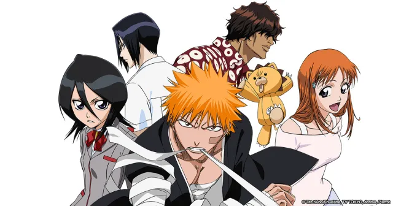

Bleach is a Japanese manga series written and illustrated by Tite Kubo.
It was first published in 2001 and ran until 2016, with a total of 74 volumes released.
The manga became very popular and gained a worldwide fan base.
What is Bleach about?
Bleach is set in a fantasy world where there exists a spiritual realm and a world of humans.
The story follows the main protagonist, teenager Ichigo Kurosaki, who gains the ability to see and communicate with ghosts. After meeting a Shinigami named Rukia Kuchiki,
Ichigo becomes a protector of the spirit world, fighting against Hollows - malevolent spirits who seek to harm both the spiritual realm and the world of humans.

Anime adaptation
Bleach was adapted into an anime series, which premiered in 2004 and ran until 2012.
The anime has a total of 366 episodes, divided into 16 arcs.
Each arc has a different number of episodes, with the first three seasons having 20-21 episodes, the next ten seasons having 16-26 episodes.
Second season "Bleach: Thousand-Year Blood War" has only 12 episodes.
The Bleach anime was produced by Studio Pierrot and gained a huge following among anime fans.